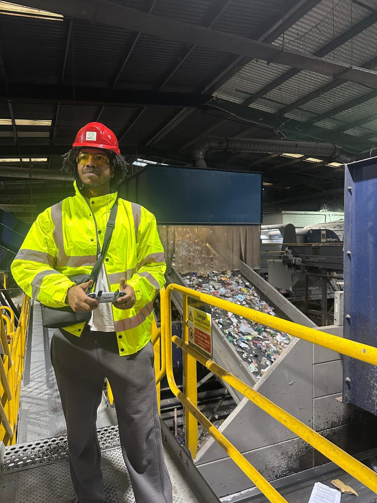
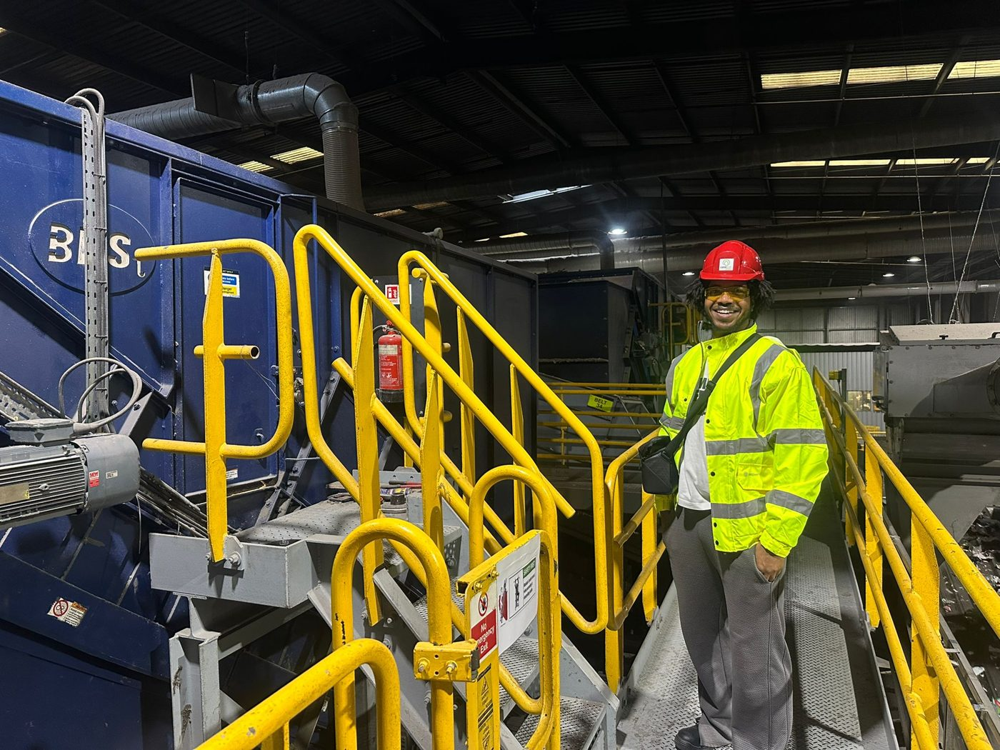

Digital twin · Casepak MRF, Leicester
A working recycling plant.
Captured while it ran.
We flew the capture through Casepak's live facility and rebuilt it as a walkable, measured twin of the whole plant. Casepak now uses it to train new starters, plan changes and show visitors round, without stopping the line.
On site
Not an empty warehouse.


Every aerial shot was planned and flown indoors, between steel gantries, overhead ducting, safety netting and moving conveyors, while the plant was running.
- Aerial and ground capture. Drone orbits and passes, plus ground-level photogrammetry.
- One capture, two uses. The same footage fed the 3D rebuild and was cut into the explainer videos inside the twin.
- Site safety. Full PPE, working around live plant alongside the site team.
From the air
The line, from above.
The twin
Every machine, one click away.
The drone and ground capture became survey-grade point cloud and mesh data, rebuilt as a real-time environment that runs in the browser. Each machine has a hotspot that opens its specs, maintenance data and a short video cut from the aerial footage.
Casepak confirmed savings of about £10,000 a year. The twin replaced staffed onboarding and school visits, and cut the engineering callouts needed for routine measurements.
Hotspot and UI systems · Gaussian splatting · RealityCapture · live data over APIs and WebSockets · Pixel Streaming for cloud delivery.
The film
How the plant actually works.
A six-minute explainer, produced and presented by UFX and filmed inside the facility. It walks through how the plant turns household recycling into material that can be sold. After it gained traction on LinkedIn, Recycle Now asked to use it on their own channels.
Independent reference
Written up by someone who isn't us.
Volinga, the company whose software carries the twin in real time, published the Casepak build as a case study on their own site and channel.
“Casepak, a complex industrial recycling facility, required a highly accurate digital twin to support training, maintenance, and operational planning. Traditional methods fell short of the required millimetre precision and real-time usability. That’s where UFX, a 3D and digital production team, stepped in.”
Volinga · case study
If your plant can't stop for training or a layout change —
that's the one worth a conversation. We capture around live operations, and the twin follows. Reply to the email that brought you here, or use the address below.
Start a conversation